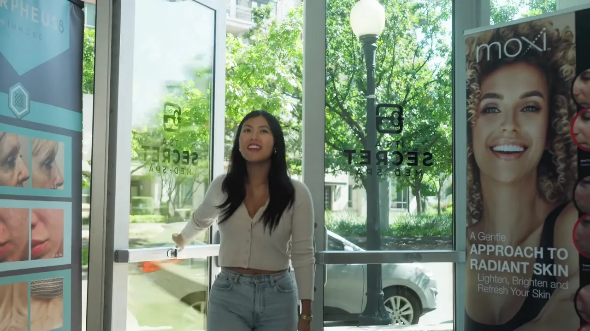

Live on this page
One ad.
Every placement.
The Marviano Cosmetics campaign on this page is reframed live into 16:9, 1:1, 4:5 and 9:16, with the subject tracked shot by shot.
Planned for the scroll.
Before the shoot, we settle the four things a social ad depends on: the hook, the product, the offer and how it reads with the sound off.
- The hook. The first seconds get planned first, because that's when people decide to keep watching.
- The product. Lit on set so it reads true to color on a small screen.
- The offer. One clear message and one next step, said or shown.
- Sound off. Feeds often play muted, so on-screen text or captions are planned in and listed in your quote.
Then I edit it and color grade it by hand, so the ad looks like the rest of your brand.
New ads every month.
Ads wear out as the same people keep seeing them, so keep the studio on retainer and tell me what you need each month.
On retainer, shoots can be planned ahead of your launches, sales and seasons instead of booked in a rush. The same director lights and grades every month, so the look holds from one month's ads to the next. Ask for anything from a fresh cut of an ad that's working to a full new shoot, and I'll quote the month within one business day. Build your month
Short spots.
Short commercials and campaign films from the studio, each one ready to cut for the feed.

Commercial with voiceover · Chicago · 0:19
It’s a Secret Med Spa
A voiceover spot for a Chicago med spa's sale: the walk-in, the treatments and the brand.
Play with soundAds or organic posts?
Taylormade Creative's social ad videos are made for paid placements, and monthly organic posts for your own accounts are on the social media content page.
Paid and organic video do different jobs. An ad often has to win attention from people who don't follow you yet, so it's built around one hook, one product and one offer, and cut for the placements it will run in. Organic content keeps your own feed active week to week. Need both? Put both in your brief, and you'll get a quote for each within one business day.
From brief to feed.
You get a quote within one business day, a 50% deposit locks the shoot date, and the ads arrive about two weeks after the shoot.
- Brief. The product, the offer, where the ad will run and when.
- Plan. Hook, script and shot list, with the sizes set in your quote. Script help and a teleprompter are available.
- Shoot. At your location in DFW or the downtown Dallas studio, lit in-house.
- Cut. Edited and graded by hand, with two rounds of edits included.
- Deliver. About two weeks after the shoot, in each size your quote lists.
Questions, answered
Updated October 2026. Also see all video production, video on retainer and all FAQs.
How much does a social media video ad cost in Dallas?
Taylormade Creative quotes social media video ads on scope, so there is no flat price. The quote is built from the concept, the location, the crew the shoot needs, how complex the edit is and how many versions and sizes you want. Nelson Taylor replies within one business day, and a 50% deposit locks the shoot date.
Which sizes do I get?
The sizes and versions of every Taylormade Creative social ad are set in your quote, based on where the ad will run. The usual shapes are 9:16 for Reels, TikTok, Stories and Shorts, 4:5 or 1:1 for the feed, and 16:9 for YouTube and the web. Captions or on-screen text are listed in the quote too.
Can one shoot cover every placement?
Yes, Taylormade Creative can reframe one film for wide and vertical placements with the subject kept in frame. The Marviano Cosmetics campaign on this page shows it live, moving from 16:9 to 1:1, 4:5 and 9:16 with the subject tracked shot by shot. The versions you need are set in your quote.
How long does a social ad take?
Standard delivery from Taylormade Creative is about two weeks after the shoot, with two rounds of edits included. You get a quote within one business day of sending your brief, and a 50% deposit locks the date. Script help and a teleprompter are available on set.
Can you make new ads every month?
Yes, Taylormade Creative takes social ad work on retainer, so new ads can be made month after month by the same director who knows your brand. Tell Nelson Taylor what you need each month and he quotes it within one business day. To start, build your month on the video production page.
Is this the same as your monthly social media content?
No, Taylormade Creative's social ad videos are made for paid placements: planned, shot, cut and graded by Nelson Taylor around one hook, one product and one offer. Monthly organic posts for your own accounts are a separate service on the social media page. If you need both, put both in your brief.
Let's talk social ads.
Tell me the product, the offer and where the ads will run, and you'll have a quote within one business day.